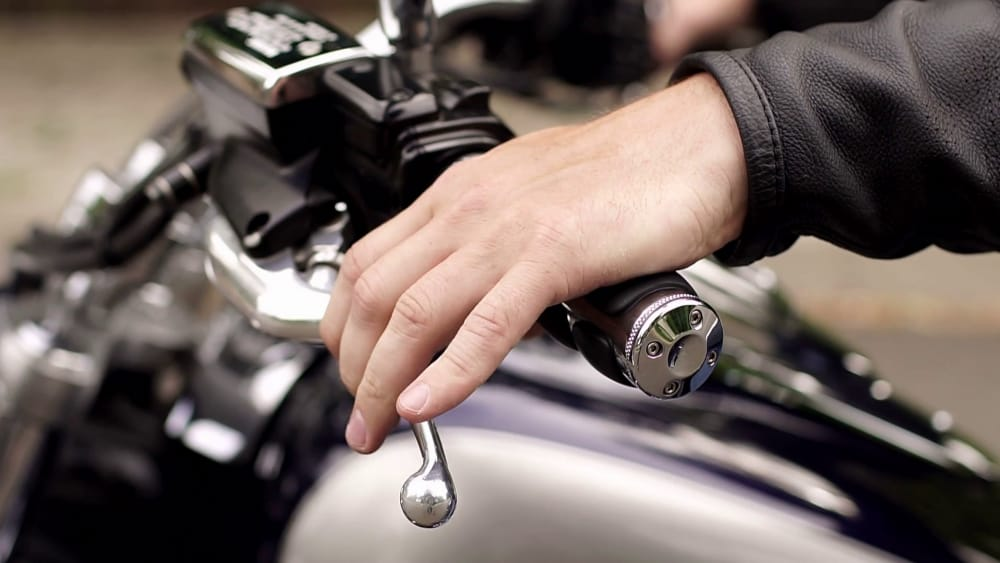

| Sejarah | Perawatan Motor Matic | Perawatan Motor Kopling | Gallery | Contact |
|---|
Perawatan Motor kopling Meskipun saat ini motor-motor matic sedang banyak digandrungi, tapi motor dengan kopling manual juga masih banyak penggunanya lho. Biasanya, motor-motor yang memakai kopling manual ialah motor berjenis sport.Motor sport sendiri ada beberapa jenisnya, misalnya motor sport naked seperti Yamaha MT-15 dan juga sport fairing seperti Yamaha R15. Nah, dalam melakukan perawatan sudah pasti motor dengan kopling manual berbeda dari motor matic. Ada beberapa hal yang harus diperhatikan dalam merawat motor dengan kopling manual.
Yang pertama untuk merawat kopling manual, sebaiknya kamu melakukan penggantian oli mesin secara rutin sesuai dengan saran pabrikan. Karena seperti diketahui, kampas kopling motor manual harus terendam oli mesin. Kalau sampai oli mesin berkurang atau kualitasnya sudah enggak bagus lantaran sudah terlalu lama dipakai, maka umur kampas kopling juga akan berkurang. Kampas kopling yang bermasalah bisa mengganggu kinerja mesin ketika melakukan perpindahan gigi, dan tentunya akan mempengaruhi kenyamanan dan keamanan kamu saat berkendara. Makanya, disarankan para pemotor bermesin kopling ini rajin mengecek dan menyetel tuas kopling pada motornya. Jika kampas kopling sudah mulai aus, maka tuas kopling akan menjadi lebih longgar. Apabila sudah enggak bisa disetel, berarti kampas kopling harus segera diganti. Kalau saat berkendara kamu merasa tarikan pada kopling berat, ada kemungkinan kabel kopling motor kamu mulai kering akibat karat atau kotoran lainnya. Untuk mengatasi hal itu cukup mudah, tinggal berikan cairan pelumas anti karat ke dalam kabel melalui tuas pada bagian handle kopling. Setelah cairan masuk coba tarik tuas kopling perlahan beberapa kali. Tapi kalau sudah lama enggak mengganti kabel kopling, gak ada salahnya menggantinya dengan yang baru biar enggak putus di jalan. |
||
|